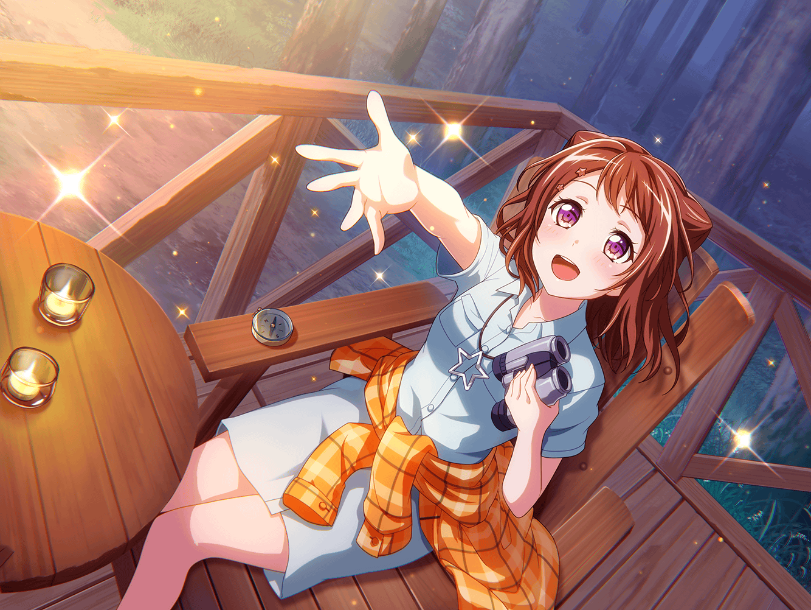

ショッピングモール
香澄
ショッピング、楽しかったね～！
香澄
たまの休日なんだもん、
みんなでお買い物に行きたいなーって思って！
２人を誘ってよかったよ〜！
つぐみ
うん！ それに、
この三人でお買い物って新鮮だね！
蘭
だね。珍しい組み合わせかも
香澄
これも、一緒に天体観測に行った縁ってことで！ ふふっ！
いやあ〜、楽しくてついついたくさん買い物しちゃったよ〜！
香澄
睡眠促進アイマスクに～、ミニサボテン！
あとネコネコマグカップとウニのフィギュア！
香澄
お肌がもちもちになる泡のハンドソープ！
それからそれから～……
つぐみ
ウ、ウニのフィギュア？
蘭
ウニにサボテン……なんでトゲトゲしたものばっかり……？
香澄
欲しいのがいっぱいあって迷っちゃったよ～
香澄
ところで二人は何を買ったの？
つぐみ
私は入浴剤のセットだよ。
ヒノキの香りとか、いろいろ入ってるのがあったんだ
蘭
あたしは音楽系の雑誌を何冊か。
あとは、CDとか服とかかな
香澄
CDかあ〜。蘭ちゃんの好きなバンド、気になるなあ。
今度教えてよ！
蘭
まあ、いいけど
香澄
ありがとう〜！ あ、そうそう、
あっちのほうに面白そうなオモチャがいっぱいあったんだよ！
香澄
プラスティックのバネがビヨンビヨンってなるやつとか、
ラジコンのヘリコプターとか！
つぐみ
そう言えばそのホビー売り場に
子供用の天体望遠鏡もあったね
つぐみ
軽くて扱いやすそうだったけど、子供用とはいえ
けっこう高いものなんだね〜……
蘭
子供用とはいえ天体望遠鏡はそれなりにするよ。
本格的なものだと、さらに桁が１つ違ってくるみたい
つぐみ
へえ〜！
蘭ちゃん、詳しいんだね
蘭
この間の天体観測の時に、持っていけないか軽く
調べたんだ。……まあ、高くて諦めたんだけど
香澄
やっぱり天体望遠鏡とか持って行ったら
もっと綺麗に見えたのかな？
つぐみ
どうなんだろう？
月とかなら、クレーターまでハッキリ見えるみたいだけど
蘭
でも、この間のは肉眼でも十分キレイに見えてたと思う
香澄
うんっ、そうだよね！
私、あの時みんなで見た星空が忘れられないよ～！
香澄
こうやって、目を閉じてもすぐに浮かんでくるんだ……。
きっと一生の思い出になるよね！
つぐみ
うん、そうだね！
キラキラのお星さま、とっても綺麗だったよ
蘭
星ももちろんだけど、
香澄が聞かせてくれた星の鼓動の話もよかったよ
蘭
キラキラドキドキって音……
あの日の星空からも聴こえてきそうな気がした
蘭
あの時も言ったけど、
あたしが初めてギターを弾いた時のことを鮮明に思い出したよ
蘭
ああいう感覚って、
人生でそう何度も感じられるものじゃないと思うから……
蘭
天体観測に行ったことは忘れられない思い出になると思う
つぐみ
私も蘭ちゃんと同じ気持ちだよっ
つぐみ
星空が見える時間までみんなに励まされながら起きてて、
私、とっても眠かったはずなのに……
つぐみ
あの星空を見た瞬間、
さっきまでの眠気がパッて吹き飛んじゃったの
つぐみ
真っ暗な空に、キラキラって星が輝いてて……
まるで宝石みたいだったなあ
つぐみ
香澄ちゃん、誘ってくれてありがとう！
香澄
えへへ、みんなであの星空を見られてよかったよ〜
香澄
私、日菜さんが教えてくれた、星の輝きの話が
とっても印象に残ってるんだ
香澄
何百年も前の輝きを見ているんだって話……
星の輝きがここに届くまでに、
そんなに長い時間旅をしてきているんだーって思って
つぐみ
何百年の旅を続けても、あせることなくあんなに
輝いていられるのって、なんだかすごいよね
香澄
うんっ！
……もしかしてさ、星の鼓動を聴いたこととか、
みんなで星を見た思い出とか……
香澄
そういう楽しかった思い出が星をもっともっと
キラキラさせてるのかも！
つぐみ
そうだね。楽しかった思い出は何年経っても
ずーっと色あせないものだもんね
蘭
そっか。星の輝きと一緒だ
香澄
そういうことっ！
私達もさ、何年たってもずーっとキラキラしてる
思い出、たくさん作っていきたいなって
つぐみ
うんっ！ 香澄ちゃんに賛成っ！
ね、蘭ちゃん！
蘭
ふふ……。だね